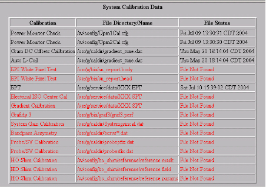

Illustration 10: Mid-level Calibration Block (example)

The Calibration column only shows a pass/fail status. If all calibrations being traced within a functional block have run, the corresponding grid box is green. It is also green if there are no applicable calibrations. If a calibration was not run, the functional area’s related field will be red.
The Calibration column title displays a new window listing all the calibrations (see Illustration 9). Calibrations that have not been run are listed in red.
The calibration results can be viewed from the mid-level/FRU pages. The block on the mid-level page lists all the pertinent calibrations, the calibration file being searched for, and whether or not the file was found (see Illustration 10). If the file is available, then the time stamp of the file is listed in the right column of the block.
Illustration 9: Calibration Window (example)

Illustration 10: Mid-level Calibration Block (example)